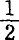

第十五章劳动力价格和剩余价值的量的变化
劳动力价值是由平均工人通常必要的生活资料的价值决定的。这些生活资料在形式上虽然可能有变化，但是在一定社会的一定时代，它们的量是一定的，所以可以看作是一个不变量。变化的是这个量的价值。还有两个因素决定劳动力的价值。一个是劳动力的发展费用，这种费用是随生产方式的变化而变化的；另一个是劳动力的自然差别：是男劳动力还是女劳动力，是成年劳动力还是未成年劳动力。这些不同劳动力的使用（这又是由生产方式决定的）在工人家庭的再生产费用上和在成年男工的价值上都造成很大的差别。但是在下面的研究中，是撇开这两个因素的。(1)
我们假定：1.商品是按照它的价值出售的；2.劳动力的价格有时可能比它的价值高，但从不比它的价值低。
在这种假定下，我们看到，劳动力价格和剩余价值的相对量取决于三种情况：1.工作日的长度，或劳动的外延量；2.正常的劳动强度，或劳动的内涵量，即一定时间内耗费一定量的劳动；3.最后，劳动生产力，即由于生产条件发展程度的不同，等量的劳动在同样时间内会提供较多或较少的产品量。(2)显然，这三个因素可以有各种各样的组合：或者是其中一个因素不变，其他两个因素可变；或者两个因素不变，一个因素可变；最后，或者三个因素同时变化。这些因素同时变化时，又因为变化的大小和方向可以不同，组合也就更加多种多样了。下面只谈谈几种最主要的组合。
Ⅰ.工作日的长度和劳动强度不变（已定），劳动生产力可变
在这个假定下，劳动力的价值和剩余价值是由三个规律决定的：
第一，不论劳动生产率如何变化，从而不论产品量和单个商品的价格如何变化，一定长度的工作日总表现为相同的价值产品。
一个十二小时工作日的价值产品例如为6先令，虽然所生产的使用价值量会随劳动生产力的变化而变化，因而6先令的价值会分配在较多或较少的商品上面。
第二，劳动力的价值和剩余价值按照相反的方向变化。劳动生产力的变化，它的提高或降低，按照相反的方向影响劳动力的价值，按照相同的方向影响剩余价值。
一个十二小时工作日的价值产品是一个不变量，例如6先令。这个不变量等于剩余价值加劳动力价值（这个价值由工人以等价物来补偿）之和。不言而喻，在一个不变量的两个部分当中，一个部分不减少，另一个部分就不能增加。剩余价值不由3先令降低到2先令，劳动力的价值就不可能由3先令提高到4先令，反过来，劳动力的价值不由3先令降低到2先令，剩余价值就不可能由3先令提高到4先令。因而，在这种情况下，劳动力价值或剩余价值的绝对量，如果没有它们的相对量或比例量的同时变化，是不可能变化的。劳动力价值和剩余价值不可能同时提高或同时降低。
其次，如果劳动生产力不提高，劳动力的价值就不能降低，从而剩余价值就不能提高。用前面的例子来说，如果不是劳动生产力的提高，使以前需要6小时生产的生活资料量用4小时就可以生产出来，劳动力的价值就不可能由3先令降低到2先令。反过来，如果不是劳动生产力的下降，使以前只用6小时就能生产的生活资料量要用8小时才能生产出来，劳动力的价值也就不可能由3先令提高到先令。由此可以得出结论，劳动生产率的提高会降低劳动力的价值，从而提高剩余价值，相反地，劳动生产率的下降会提高劳动力的价值，降低剩余价值。
李嘉图在表述这个规律时忽略了一点：虽然剩余价值量或剩余劳动量的变化是以劳动力的价值量或必要劳动量的相反的变化为前提的，但决不能由此推论说，这些量是按照同一比例变化的。它们会以相同的量增加或减少。但是价值产品或工作日的各部分增加或减少的比例，取决于劳动生产力变化以前的原来的划分。假定劳动力价值为4先令，或必要劳动时间为8小时，剩余价值为2先令，或剩余劳动为4小时；如果由于劳动生产力提高，劳动力价值降低到3先令，或必要劳动降低到6小时，那么剩余价值就提高到3先令，或剩余劳动提高到6小时。一方增加的量和另一方减少的量都是2小时或1先令。但是用比例来表示的量的变化在两方面是不一样的。劳动力的价值由4先令降低到3先令，即降低了或25%，剩余价值则由2先令提高到3先令，即提高或50%。由此可见，劳动生产力的一定变化所引起的剩余价值的增加或减少的比例，取决于工作日中原来表现为剩余价值的那一部分，如果那部分原来较小，比例就较大，原来较大，比例就较小。
第三，剩余价值的增加或减少始终是劳动力价值相应的减少或增加的结果，而决不是这种减少或增加的原因。(3)
因为工作日是一个不变量，并表现为不变的价值量，因为剩余价值量的每一变化都有劳动力价值量的相反的变化与之相适应，又因为劳动力的价值只能随劳动生产力的变化而变化，所以很清楚，在这些条件下，剩余价值量的任何变化都是由劳动力价值量的相反的变化而引起的。上面我们已经知道，劳动力价值和剩余价值的绝对量，如果没有它们的相对量的变化，是不可能变化的。现在，我们又得出，它们的相对量，如果没有劳动力价值的绝对量的变化，是不可能变化的。
按照第三个规律，剩余价值量的变化是以劳动生产力的变化所引起的劳动力价值的变动为前提的。剩余价值量变化的界限是由劳动力价值的新的界限决定的。但是，即使在情况允许这个规律发生作用的条件下，也会发生各种中间的变动。例如，由于劳动生产力的提高，劳动力价值由4先令降低到3先令，或者必要劳动时间由小时降低到6小时，而劳动力的价格还是可以只降低到3先令8便士，3先令6便士，3先令2便士等等，因而剩余价值只提高到先令4便士，3先令6便士，3先令10便士等等。下降以3先令为最低界限，而下降程度取决于资本的压力同工人的反抗这二者的力量对比。
劳动力的价值是由一定量的生活资料的价值决定的。随着劳动生产力的变化而变化的，是这些生活资料的价值，而不是它们的量。在劳动生产力提高时，工人和资本家的生活资料量本身可以同时按照同样的比例增长，而劳动力价格和剩余价值之间不发生任何量的变化。如果劳动力原来的价值是3先令，必要劳动时间是6小时，而剩余价值也是3先令，剩余劳动也是6小时，那么，在工作日的划分不变的情况下，劳动生产力虽然提高一倍，而劳动力价格和剩余价值会保持不变。不过它们现在都表现为数量增加一倍、但按比例变得便宜了的使用价值。劳动力的价格虽然不变，但是它现在提高到劳动力的价值以上。如果劳动力的价格下降，但没有下降到由劳动力的新价值所决定的最低界限，即先令，而是下降到先令10便士，2先令6便士等等，那么这个下降了的价格也还是代表一个增加了的生活资料量。可见，在劳动生产力提高时，劳动力的价格能够不断下降，而工人的生活资料量同时不断增加。但是相对地说，即同剩余价值比较起来，劳动力的价值还是不断下降，从而工人和资本家的生活状况之间的鸿沟越来越深。(4)
李嘉图第一个严密地表述了上述三个规律。他的阐述中的缺点是：1.他把这些规律所适用的各种特殊条件看作是资本主义生产的理所当然的、普遍的和独有的条件。他既不懂得工作日长度的变化，也不懂得劳动强度的变化，因此在他看来，劳动生产率自然就成了惟一可变的因素。2.同其他一切经济学家一样，李嘉图从不研究剩余价值本身，就是说，他不是撇开它的特殊形式如利润、地租等去进行研究。这一点在比前一点大得多的程度上损害了他的分析。因此，他把剩余价值率的各种规律同利润率的各种规律直接混一谈。[389]上面已经说过，利润率是剩余价值同预付总资本的比率，而剩余价值率则是剩余价值同这个资本的可变部分的比率。假定资本（C）为500镑，分在原料、劳动资料等（c）上共400镑，分在工资（v）上为100镑；再假定剩余价值（m）＝100镑。这样，剩余价值率为＝100%，而利润率＝20%。此外，很显然，利润率还取决于对剩余价值率不发生任何影响的一些情况。以后在本书第三册中，我将说明，同一个剩余价值率可以表现为极不相同的利润率，而不同的剩余价值率在一定情况下也可以表现为同利润率。[390]
Ⅱ.工作日和劳动生产力不变，劳动强度可变
劳动强度的提高是以在同一时间内劳动消耗的增加为前提的。因此，一个强度较大的工作日比一个时数相同但强度较小的工作日体现为更多的产品。诚然，在劳动生产力提高时，同一个工作日就提供较多的产品。但在后一种情况下，由于产品所费劳动比以前少，单个产品的价值就下降；而在前一种情况下，由于产品所费的劳动同以前一样，单个产品的价值保持不变。在这种情况下，产品的数量增加了，但它们的价格没有下降。随着产品数量的增加，它们的价格总额也就增大，但在生产力提高的情况下，同一价值总额不过表现在增大的产品总量上。可见，在劳动时数不变的情况下，强度较大的工作日就体现为较多的价值产品，因而，在货币的价值不变的情况下，也就体现为较多的货币。强度较大的工作日的价值产品随着它的强度同社会的正常强度的偏离程度而变化。因此，同一个工作日不再像以前那样表现为一个不变的价值产品，而是表现为一个可变的价值产品。例如，强度较大的十二小时工作日，就不像普通强度的十二小时工作日那样，表现为6先令，而是表现为7先令、8先令等等。显然，如果一个工作日的价值产品发生变化，例如从6先令增加到8先令，那么这个价值产品的两个部分，即劳动力的价格和剩余价值可以同时按照相同的或不同的程度增加。如果价值产品由6先令提高到8先令，劳动力价格和剩余价值可以同时由3先令增加到4先令。在这种场合，劳动力价格虽然提高，但不一定要超过它的价值。相反地，在劳动力价格提高时，劳动力价格还可能降低到劳动力的价值以下(5)。当劳动力价格的提高不能补偿劳动力的加速的损耗时总是发生这种情况。
我们知道，撇开一时的例外情况不说，只有在有关的产业部门的产品加入工人的日常消费的情况下，劳动生产率的变化才能引起劳动力价值量的变化，从而引起剩余价值量的变化。(6)这种限制在这里是不适用的。不论劳动量在外延上还是在内涵上发生变化，劳动的价值产品量总要与劳动量的变化相适应而发生变化，而不管这个价值借以体现的物品有怎样的性质。
如果一切产业部门的劳动强度都同时相等地提高，新的提高了的强度就成为普通的社会的正常强度，因而不再被算作外延量。但是甚至在这种情况下，平均的劳动强度在不同的国家仍然是不同的，因而会使价值规律在不同国家的工作日上的应用有所变化。一个国家的强度较大的工作日，比另一个国家的强度较小的工作日，表现为更大的货币额。(7)
Ⅲ.劳动生产力和劳动强度不变，工作日可变
工作日可以向两个方向变化。它可以缩短或延长。
1.在假定的条件下，即在劳动生产力和劳动强度不变时，工作日的缩短不会使劳动力价值，从而不会使必要劳动时间发生变化。它会缩小剩余劳动和剩余价值。随着剩余价值的绝对量的下降，它的相对量，即它同劳动力价值的不变量相比的量也就下降。资本家只有把劳动力价格压低到它的价值以下，才能避免损失。
一切反对缩短工作日的陈词滥调，都认定这种现象是在这里所假设的条件下发生的。然而实际上正好相反：劳动生产率和劳动强度的变化，或者是在工作日缩短以前，或者是紧接着在工作日缩短以后发生的。(8)
2.工作日的延长：假定必要劳动时间是6小时，或劳动力价值是3先令，剩余劳动也是6小时，剩余价值是3先令。那么，整个工作日就是12小时，并表现为6先令的价值产品。如果工作日延长2小时，劳动力价格不变，那么剩余价值的相对量就随同它的绝对量一同增加。虽然劳动力价值按其绝对量来说没有变化，但按其相对量来说却降低了。在第Ⅰ节所假设的条件下，劳动力价值的绝对量不发生变化，它的相对量就不可能变化。相反地，在这里，劳动力价值的相对量的变化，是剩余价值的绝对量的变化的结果。
因为工作日借以表现的价值产品随着工作日的延长而增加，所以劳动力的价格和剩余价值可以同时等量地或不等量地增长。这种同时增长可以发生在下述两种场合：工作日绝对延长，或者工作日没有绝对延长，但是劳动强度增加了。
随着工作日的延长，劳动力的价格尽管名义上不变，甚至有所提高，还是可能降到它的价值以下。我们记得，劳动力的日价值是根据劳动力的正常的平均持续时间或工人的正常的寿命来计算的，并且是根据从生命物质到运动的相应的、正常的、适合人体性质的转变来计算的。(9)与工作日的延长密不可分的劳动力的更大损耗，在一定点内，可以用增多的报酬来补偿。超过这一点，损耗便以几何级数增加，同时劳动力再生产和发挥作用的一切正常条件就遭到破坏。劳动力的价格和劳动力的剥削程度就不再是可通约的量了。
Ⅳ.劳动的持续时间、劳动生产力和劳动强度同时变化
很明显，在这里可能有许多种组合。可能两个因素变化，一个因素不变，或者三个因素同时发生变化。它们可能在同一程度上或在不同程度上变化，可能向同一方向或向相反的方向变化，以致它们的变化可以部分地或全部地互相抵消。其实，根据Ⅰ，Ⅱ，Ⅲ节所作的解释来分析一切可能的情况并不困难。只要顺次地把其中一个因素视为可变，把其他因素视为不变，就会得到任何一种可能的组合的结果。因此在下面我们只简单地谈谈两种重要的情况。
1.劳动生产力降低，同时工作日延长：
这里所谈的劳动生产力的降低，是指这样一些劳动部门，它们的产品决定劳动力的价值。由于土壤肥力下降以及农产品相应涨价所引起的劳动生产力的降低，就是一个例子。假定工作日是12小时，它的价值产品是6先令，其中一半补偿劳动力的价值，另一半形成剩余价值。因此，工作日划分为6小时必要劳动和6小时剩余劳动。假定由于农产品的涨价，劳动力的价值由3先令提高到4先令，因而必要劳动时间由6小时增加到8小时。如果工作日不变，那么剩余劳动就从6小时减少到4小时，剩余价值就从3先令降低到2先令。如果工作日延长2小时，即从12小时延长到14小时，那么剩余劳动仍然是6小时，剩余价值仍然是3先令，但是剩余价值量同由必要劳动计量的劳动力价值相比较却下降了。如果工作日延长4小时，即由12小时延长到16小时，那么剩余价值和劳动力价值的比例量，剩余劳动和必要劳动的比例量仍然不变。但是剩余价值的绝对量由3先令增加到4先令，剩余劳动的绝对量由6个劳动小时增加到8个劳动小时，即增加或%。可见，在劳动生产力降低和工作日同时延长的情况下，即使剩余价值的比例量降低，它的绝对量仍可保持不变；即使剩余价值的绝对量增加，它的比例量仍可保持不变；并且，工作日延长到一定的程度时，剩余价值的比例量和绝对量都可能增加。
在1799年到1815年期间，英国生活资料价格的上涨引起了名义工资的提高，虽然用生活资料表示的实际工资降低了。威斯特和李嘉图由此得出农业劳动生产率的下降引起剩余价值率下降的结论，并且把这个仅仅存在于他们幻想之中的假定当作对工资、利润和地租的相对的量的关系进行重要分析的出发点。[391]但是在当时，由于劳动强度的提高和劳动时间的强制延长，剩余价值也绝对地和相对地增加了。这正是工作日的无限度的延长获得公民权的时期(10)，这个时期的特点是：一方面资本加速增长，另一方面需要救济的赤贫也加速增长。(11)
2.劳动强度和劳动生产力提高，同时工作日缩短：
劳动生产力的提高和劳动强度的增加，从一方面来说，起着同样的作用。二者都会增加任何一段时间内所生产的产品总额。因此，二者都能缩短工人生产自己的生活资料或其等价物所需要的工作日部分。工作日的绝对最低界限，总是由工作日的这个必要的但能缩减的部分形成。如果整个工作日缩小到这个必要的部分，那么剩余劳动就消失了，这在资本的制度下是不可能发生的。只有消灭资本主义生产形式，才允许把工作日限制在必要劳动上。但是，在其他条件不变的情况下，必要劳动将会扩大自己的范围。一方面，是因为工人的生活条件将会更加丰富，他们的生活要求将会增大。另一方面，是因为现在的剩余劳动的一部分将会列入必要劳动，即形成社会准备基金和社会积累基金所必要的劳动。
劳动生产力越是增长，工作日就越能缩短；而工作日越是缩短，劳动强度就越能增加。从社会的角度来看，劳动生产率还随同劳动的节约而增长。这种节约不仅包括生产资料的节约，而且还包括一切无用劳动的免除。资本主义生产方式迫使每一个企业实行节约，但是它的无政府状态的竞争制度却造成社会生产资料和劳动力的最大的浪费，而且也产生了无数现在是必不可少的、但就其本身来说是多余的职能。
在劳动强度和劳动生产力已定的情况下，劳动在一切有劳动能力的社会成员之间分配得越平均，一个社会阶层把劳动的自然必然性从自身上解脱下来并转嫁给另一个社会阶层的可能性越小，社会工作日中用于物质生产的必要部分就越小，从而用于个人的自由活动，脑力活动和社会活动的时间部分就越大。从这一方面来说，工作日的缩短的绝对界限就是劳动的普遍化。在资本主义社会里，一个阶级享有自由时间，是由于群众的全部生活时间都转化为劳动时间了。
(1) 第281页所研究的情形，在这里自然也被撇开了。〔第3版注。——弗·恩·〕
(2) 见本卷第363—373页。——编者注
(3) 麦克库洛赫也对这第三个规律作了荒谬的补充：通过取消资本家以前必须交纳的捐税，剩余价值在劳动力价值不降低的情况下也能提高。这些捐税的取消绝对不会改变产业资本家直接从工人身上榨取的剩余价值量。它只是改变产业资本家装进自己腰包的剩余价值的比例，或要同第三者分享的剩余价值的比例。所以它不会改变劳动力价值和剩余价值的比例。因此，麦克库洛赫所谓的例外情况只能证明他对规则的误解。在他把李嘉图庸俗化时，正像让·巴·萨伊把亚·斯密庸俗化时一样，常常发生这种不幸。
(4) “当工业生产率发生变化，一定量的劳动和资本所生产的产品增多或减少时，工资所占的比例部分会发生显著的变化，但这个部分所代表的量不变；或者这个量发生变化，但工资的比例部分不变。”（［约·卡泽诺夫］《政治经济学大纲》第67页）
(5) 这句话是根据德文第1版译的，第2至4版是：劳动力的价值还可能降低。——编者注
(6) 见本卷第364—368页。——编者注
(7) “在其他条件相同的情况下，同别国工厂主相比，英国工厂主在一定时间内所能得到的劳动量要多得多，以致英国每周总计60小时的工作日抵得上别国72至80小时的工作日。”（《工厂视察员报告。1855年10月31日》第65页）通过法令进一步缩短大陆各工厂的工作日，会是缩小大陆和英国的劳动时间的差距的最有效手段。
(8) “十小时工作日法令的施行，表明……存在着各种补偿的情况。”《工厂视察员报告。1848年10月31日》第7页）
(9) “人在24小时内所耗费的劳动量，可以从研究人体内部的化学变化来大致确定，因为物质的变化了的形式表明动力已经消耗的情况。”（格罗夫《物理力的相互关系》［第308、309页］）
(10) “谷物和劳动很少会完全齐头并进，但是有一个明显的界限，越过这个界限它们就不能互相分离。劳动阶级在物价上涨时期作出的异乎寻常的努力，引起工资下降，这种下降在证词〈1814—1815年向议会调查委员会作的证词〉中已经得到证实。这种努力对个人来说是十分光荣的，并确能促使资本增长。但是任何一个有人性的人，都不希望这种努力永远不变地坚持下去。作为权宜之计，这种努力是十分值得赞扬的；如果这种努力永远坚持下去，其结果就和一个国家的居民在食物上濒于绝境差不多。”（马尔萨斯《关于地租的本质和增长》1815年伦敦版第48、49页注）当李嘉图等人不顾最惹人注目的事实，把工作日的不变量当作他们全部研究的基础时，马尔萨斯却强调工作日的延长，并且在自己的小册子的其他地方也直截了当地谈到这一点。这对马尔萨斯来说是一种光荣。但是马尔萨斯为之效劳的保守利益使他看不到，随着机器的异常的发展以及对妇女劳动和儿童劳动的剥削，无限度地延长工作日必定会使工人阶级的很大一部分“过剩”，特别是在战争造成的需求和英国对世界市场的垄断消失的时候。用永恒的自然规律去解释这种“人口过剩”，当然比用资本主义生产的纯粹历史的自然规律去解释更便利，更符合马尔萨斯真正牧师般地崇拜的统治阶级的利益。
(11) “战争期间资本增加的主要原因，在于每个社会中人数最多的劳动阶级的更加努力，也许还在于这个阶级的更加贫困。更多的妇女和儿童为环境所迫，不得不从事劳动；原来的工人，由于同样的原因不得不拿出更多的时间去增加生产。”（［乔治·罗伯逊］《政治经济学论文集。论当前国家贫困的主要原因》1830年伦敦版第248、249页）
[389] 见马克思《政治经济学批判（1861—1863年手稿）》第Ⅵ笔记本第220页和第Ⅻ笔记本第636—639页。——598。
[390] 见马克思《资本论（1863—1865年经济学手稿）》第三册（《马克思恩格斯全集》1992年历史考证版第2部分第4卷第2册第1章《剩余价值转化为利润》；第2章《利润转化为平均利润》）。——598。
[391] 见马克思《政治经济学批判（1861—1863年手稿）》第Ⅺ笔记本第498—508页。——604。